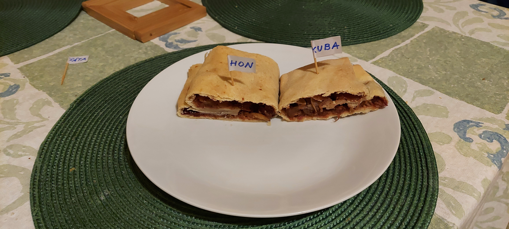

Vladimír a Shashque?
13 reasons why!
Prepare
40 dg flour
2 smaller, or 1 bigger egg
Oil and vinegar
pinch of salt
Warm water for earning
Apples
Sugar
Cinnemon
Optional: Raisins
Prepare a scoop of flour, make a dimple, and break the egg inside.
Add 2 spoons of oil, spoon of vinegar and a pinch of salt. We add water and do the dough.
The final dough should be soft, uniform and fair yellow colored.
Divide the dough on 3 similar parts. Take one and roll it as is the length of the pan.
On top of the dough add the grated or chopped apples, add sugar mixed with cinnemon, pack it up and move onto the pan.
Use the same proceedure with the rest of the pieces of dough. Put the pan to the oven for half an hour (180 degrees Celsius).
take out the pan and let it cool of. Serve with cream, iced with sugar or as is.

Bon apetit!